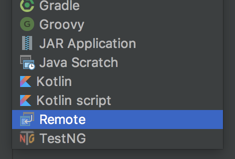
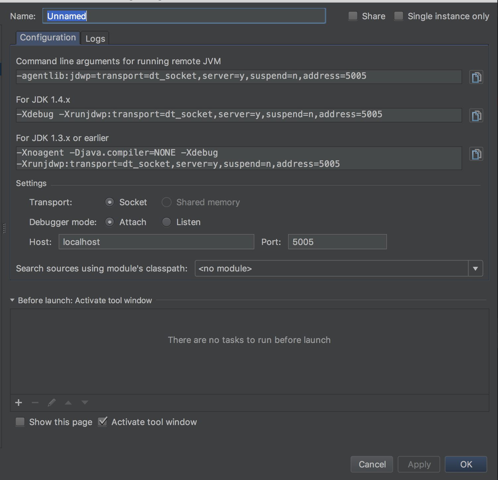
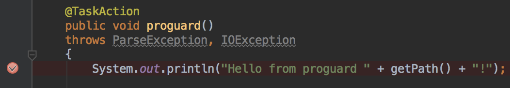
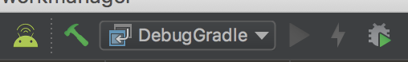
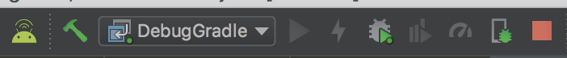

Android Studio是由Google官方提供，用於開發Google手機專用的APK或Library，詳細可以直接參照官方網站。
以下是記錄一些用法和問題解法。
Usage
Exclude log
如果用USB接上實機時，常常會有一堆雜亂的log訊息出現在Logcat中，可以**Logcat console > Edit Filter Configuration > Log Tag(regex)**來透過以下規則去除大部分的規則：
^(?!(TransferManager|WifiMulticast|WifiHW|MtpService|PushClient|Tethering|SensorService|WifiStateMachine|hawaii.hwcomposer|AnyDo|PowerManagerService|Monitor|IconMerger|InputMethodManager|SignalClusterView_dual|StatusBar.NetworkController_dual|LocationManagerService|Provider|SurfaceTextureClient|ImageLoader|dalvikvm|OpenGLRenderer|skia|AbsListView|MediaPlayer|AudioManager|VelocityTracker|Drv|Jpeg|CdpDrv|IspDrv|TpipeDrv|iio|ImgScaler|IMG_MMU|ResMgrDrv|JpgDecComp|JpgDecPipe|mHalJpgDec|PipeMgstatrDrv|mHalJpgParser|jdwp|libEGL|Zygote|Trace|InputEventReceiver|SpannableStringBuilder|IInputConnectionWrapper|MotionRecognitionManager|LoadedApk|Settings|PhoneWindow|Choreographer|v_galz|SensorManager|Sensors|GC|LockPatternUtils|STATUSBAR*|SignalStrength|STATUSBAR-BatteryController|BatteryService|STATUSBAR-PhoneStatusBar|WifiP2pStateTracker|Watchdog|AlarmManager|BatteryStatsImpl|STATUSBAR-Clock|NetworkIdentityqdlights)) |
Debug Gradle Task
AS除了提供開發者在程式碼內下斷點來debug，也有提供在gradle下斷點的方式，適合拿來觀察gradle的task內容。
步驟順序如下：
建立Remote Debugger
- 進Run -> Edit Configurations，從左上角選單點擊”+”。

- 選擇Remote

- 看到如下選單，設定都可以不用調整，可依照需求改名，點選OK建立。

在task內設定斷點
一個task的進入點通常是有標記TaskAction的函式：

透過指令啟動task
./gradlew <taskname> -Dorg.gradle.debug=true --no-daemon |
如果沒有加上--no-daemon，則要在測試後關閉daemon：
./gradlew --stop |
第一次執行時會停在以下訊息，執行下一步驟即可繼續：
> Starting Daemon |
如果已經執行過則會直接跳到斷點的位置，不需要再另外執行下一步驟。
執行Remote debugger
點選debug模式：

執行後就會停在剛剛設定的位置：

關閉Remote debugger：
按紅框即可關閉：
